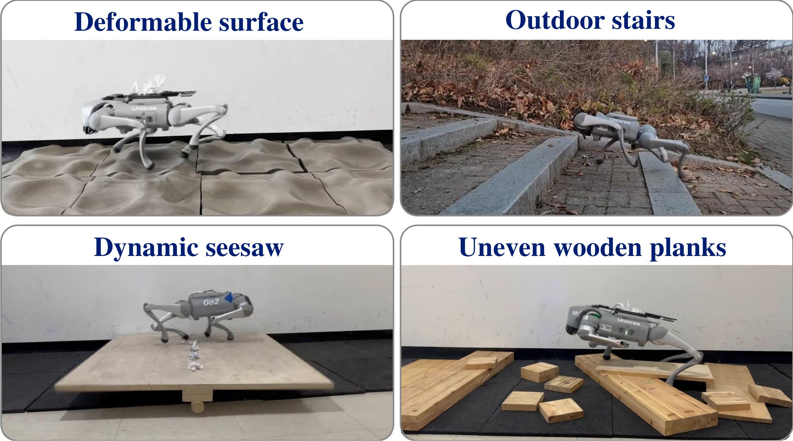
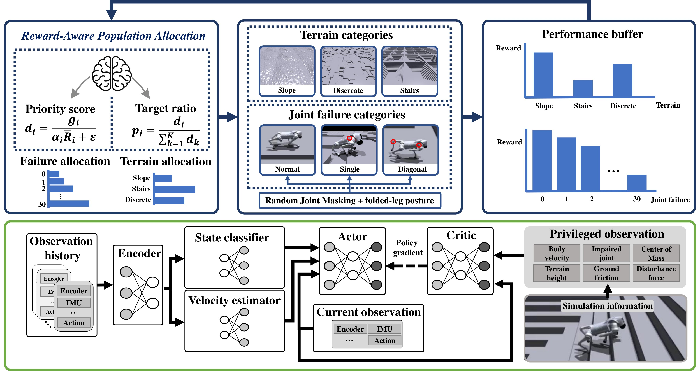
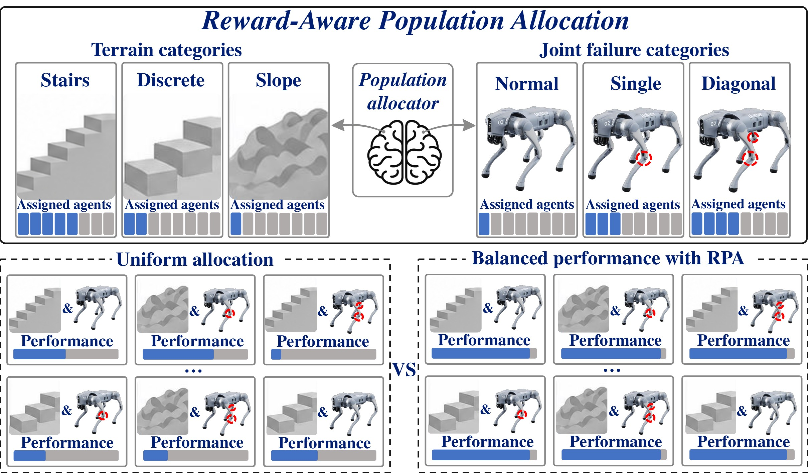
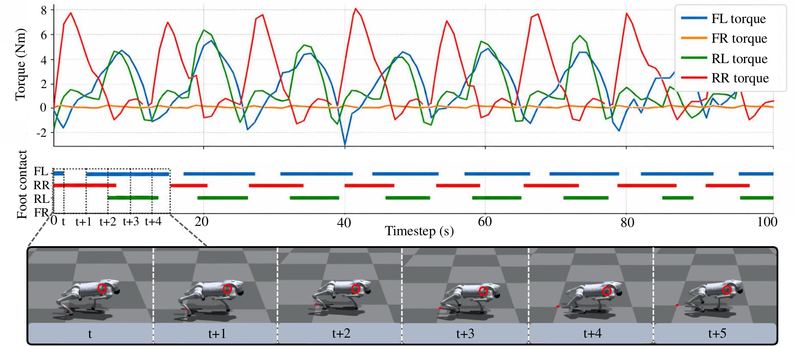
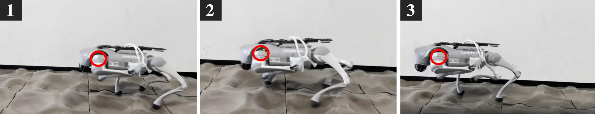
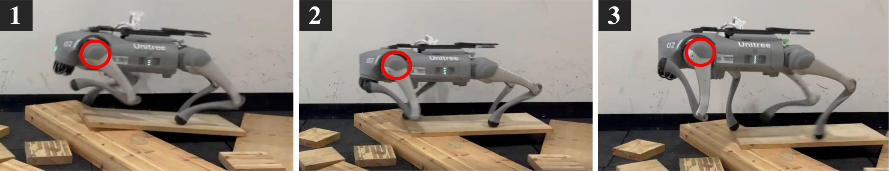
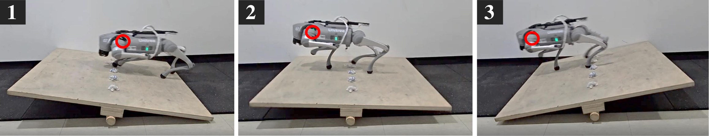
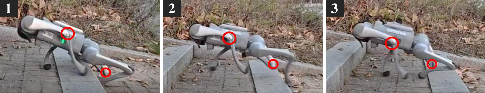

0.1273
Overall tracking RMSE
55% lower than Masking
Under review · 2026
A single blind-locomotion policy that adapts to normal, single-joint, and selected diagonal two-joint failures—across deformable, uneven, moving, and stair terrains.

The central idea
Reward-Aware Population Allocation dynamically moves parallel environments toward lower-performing terrain and failure categories, producing balanced recovery behavior instead of over-training the easy cases.
0.1273
Overall tracking RMSE
55% lower than Masking
98.2%
Fault-state accuracy
With BCE classification
12.5→0.5
Return spread
Across failure categories
1 policy
Unified controller
No policy switching
Method
The framework combines condition generation, adaptive population allocation, and history-based failure-aware policy conditioning.

Combine normal, single-joint, and diagonal two-joint torque-loss conditions with diverse terrain families.
Independently assign more environments to failure and terrain categories with lower returns.
Estimate body velocity and joint-failure states from proprioceptive history to condition one actor.
Reward-Aware Population Allocation
Training conditions have different levels of difficulty. RPA converts category returns into target population ratios, giving difficult conditions more experience while preventing already-solved cases from dominating the budget.

Simulation results
The policy keeps tracking error in a narrow range across joint locations and maintains locomotion on discontinuous terrains where comparison methods degrade.

A single actor is used for every condition without switching to a failure-specific controller.
Real-robot validation
Deployed on a Unitree Go2 without additional real-robot training. Each sequence shows locomotion under representative joint torque-loss conditions.

Compliant, changing local contact

Abrupt foothold-height changes

Contact-driven platform motion

Discontinuous terrain in the wild
Quadrupedal robots increasingly operate where human access is difficult or dangerous, yet even a single joint failure can severely restrict mobility on uneven terrain. We present a unified framework for blind locomotion across diverse terrains under normal, single-joint, and selected diagonal two-joint failure conditions. Reward-Aware Population Allocation dynamically reallocates failure and terrain populations according to category returns, focusing training on difficult conditions. A history-based state estimator infers body velocity and joint-failure states and conditions a unified policy on these estimates. Simulation and real-robot experiments demonstrate locomotion on deformable, uneven, moving, and stair terrains without additional real-robot training.
Citation
@article{anonymous2026faulttolerant,
title = {Learning Fault-tolerant Quadrupedal Locomotion in Rough Terrains},
author = {Anonymous Authors},
year = {2026},
note = {Under Review}
}